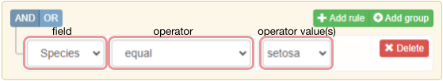
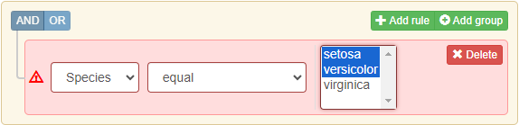

query-operators.RdConfigure available user interface operators
mapOperator(
name,
apply_to,
optgroup = "basic",
nb_inputs = 1,
multiple = FALSE,
.queryBuilderConfig = queryBuilder::queryBuilderConfig
)
listMappedOperators(
r_class,
print = TRUE,
.queryBuilderConfig = queryBuilder::queryBuilderConfig
)Name of the operator to be mapped.
Precise what field types (classes) should the operator be available to.
When operators is not defined for queryFilter, all of the operators matching `queryFilter`
type will be available in the operators dropdown.
Possible values are 'character', 'factor', 'integer', 'numeric', 'POSIXct', 'Date' and 'logical'.
Character string ("basic" default). Operators with the same `optgroup` will be presented within a separate group in the operators dropdown.
Integer. The number of inputs displayed. See 'Details' for more information.
Logical. Inform the builder if operator can accept multiple values for associated inputs. In order to enable multiple values for specific input, set `multiple = TRUE` when creating queryFilters.
R6 object of class 'queryBuilderConfig' storing queryOperators. See query-operator.
Optional R class to list operators assigned to it. When skipped all the mapped operators will be summed up.
Should the operators summary be printed?
When configuring a single query rule, user needs to precise three values in 'queryBuilderInput' interface:
1. field Name of the field that can be interpreted as a filtered column name. Selected with dropdown.
2. operator Name of the operator to be applied to the field. Selected with dropdown.
3. operator value(s) Value(s) that narrows down the operator definition. Depending on the chosen operator, such input can be take through various kind of **input controllers**.

More detailed configuration for operators linked to specific fields as long as **input controllers** for taking operator values should be set with queryFilter.
mapOperator is responsible to establish connection between user interface operators
and queryOperator, that are responsible to convert user input to a valid R-expression.
The provided configuration allows to shape what **input controllers** should be used to allow users providing
operators' value(s).
Parameter `multiple` precises whether queryBuilderInput should allow to provide multiple values for each input controller. When input controller accepts more than one value and user provides them, in case of `multiple = FALSE`, 'queryBuilderInput' will alert about it and won't send any values to application server.

Please remember `multiple = TRUE`, doesn't mean the associated input controller will automatically accept multiple values, this needs to be separately set for each queryFilter, that is responsible for input controllers configuration.
Parameter `nb_inputs` informs how many input controllers should be rendered to take operator value(s).
A good practice is to configure your operators the following way:
nb_inputs = 0 Operator associated function doesn't require any value, e.g. 'is_null' or 'is_empty' that only require 'field' name.
nb_inputs = n, multiple = FALSE Operator associated function requires exactly `n` values, e.g. `n=2` for 'between' that requires lower and upper bound to precise it. As a result `n` separate input controllers will be rendered, each taking a single value.
nb_inputs = 1, multiple = TRUE Operator associated function accepts dynamic number of values, e.g. 'in'. As a result one single input controller will be rendered, and operator will allow it to have multiple values set.
# Set backend operator
in_closed_range <- function(field, bounds) {
field >= bounds[1] & field <= bounds[2]
}
queryBuilder::setQueryOperators(
within = queryBuilder::queryOperator(in_closed_range)
)
queryBuilder::listQueryOperators()
#> equal: ==
#> not_equal: !=
#> in: %in%
#> not_in: !`%in%`
#> less: <
#> less_or_equal: <=
#> greater: >
#> greater_or_equal: >=
#> between: queryBuilder::in_range
#> not_between: !queryBuilder::in_range
#> begins_with: startsWith
#> not_begins_with: !startsWith
#> contains: queryBuilder::in_string
#> not_contains: !queryBuilder::in_string
#> ends_with: endsWith
#> not_ends_with: !endsWith
#> is_empty: queryBuilder::is_empty
#> not_is_empty: !queryBuilder::is_empty
#> is_null: is.na
#> not_is_null: !is.na
#> within: in_closed_range
# Map backend operator to the user interface one
mapOperator(
name = "within",
nb_inputs = 2, # take value with 2 input controllers
multiple = FALSE, # verify if only single value per controller is set
apply_to = c("numeric", "Date", "logical") # apply operator to selected field types
)
listMappedOperators()
#> equal:
#> optgroup: basic
#> nb_inputs: 1
#> multiple: FALSE
#> apply_to: factor, character, numeric, Date, logical
#> R method: ==
#> not_equal:
#> optgroup: basic
#> nb_inputs: 1
#> multiple: FALSE
#> apply_to: factor, character, numeric, Date, logical
#> R method: !=
#> in:
#> optgroup: basic
#> nb_inputs: 1
#> multiple: TRUE
#> apply_to: factor, character, numeric, Date
#> R method: %in%
#> not_in:
#> optgroup: basic
#> nb_inputs: 1
#> multiple: TRUE
#> apply_to: factor, character, numeric, Date
#> R method: !`%in%`
#> less:
#> optgroup: basic
#> nb_inputs: 1
#> multiple: FALSE
#> apply_to: numeric, Date
#> R method: <
#> less_or_equal:
#> optgroup: basic
#> nb_inputs: 1
#> multiple: FALSE
#> apply_to: numeric, Date
#> R method: <=
#> greater:
#> optgroup: basic
#> nb_inputs: 1
#> multiple: FALSE
#> apply_to: numeric, Date
#> R method: >
#> greater_or_equal:
#> optgroup: basic
#> nb_inputs: 1
#> multiple: FALSE
#> apply_to: numeric, Date
#> R method: >=
#> between:
#> optgroup: basic
#> nb_inputs: 2
#> multiple: FALSE
#> apply_to: numeric, Date
#> R method: queryBuilder::in_range
#> not_between:
#> optgroup: basic
#> nb_inputs: 2
#> multiple: FALSE
#> apply_to: numeric, Date
#> R method: !queryBuilder::in_range
#> begins_with:
#> optgroup: basic
#> nb_inputs: 1
#> multiple: FALSE
#> apply_to: factor, character
#> R method: startsWith
#> not_begins_with:
#> optgroup: basic
#> nb_inputs: 1
#> multiple: FALSE
#> apply_to: factor, character
#> R method: !startsWith
#> contains:
#> optgroup: basic
#> nb_inputs: 1
#> multiple: FALSE
#> apply_to: factor, character
#> R method: queryBuilder::in_string
#> not_contains:
#> optgroup: basic
#> nb_inputs: 1
#> multiple: FALSE
#> apply_to: factor, character
#> R method: !queryBuilder::in_string
#> ends_with:
#> optgroup: basic
#> nb_inputs: 1
#> multiple: FALSE
#> apply_to: factor, character
#> R method: endsWith
#> not_ends_with:
#> optgroup: basic
#> nb_inputs: 1
#> multiple: FALSE
#> apply_to: factor, character
#> R method: !endsWith
#> is_empty:
#> optgroup: basic
#> nb_inputs: 0
#> multiple: FALSE
#> apply_to: factor, character
#> R method: queryBuilder::is_empty
#> not_is_empty:
#> optgroup: basic
#> nb_inputs: 0
#> multiple: FALSE
#> apply_to: factor, character
#> R method: !queryBuilder::is_empty
#> is_null:
#> optgroup: basic
#> nb_inputs: 0
#> multiple: FALSE
#> apply_to: factor, character, numeric, Date, logical
#> R method: is.na
#> not_is_null:
#> optgroup: basic
#> nb_inputs: 0
#> multiple: FALSE
#> apply_to: factor, character, numeric, Date, logical
#> R method: !is.na
#> within:
#> optgroup: basic
#> nb_inputs: 2
#> multiple: FALSE
#> apply_to: numeric, Date, logical
#> R method: in_closed_range
filters = list(
queryFilter("Sepal.Length", operators = c("within", "less"), type = "numeric", values = range(iris$Sepal.Length)),
# no operators set, means take all for "character"
queryFilter("Species", type = "character", values = levels(iris$Species))
)
ui <- shiny::fluidPage(
title = title,
queryBuilderInput(
"qb",
filters = filters
),
shiny::verbatimTextOutput("expr")
)
server <- function(input, output, session) {
output$expr <- shiny::renderPrint({
print(queryToExpr(input$qb))
})
}
if (interactive()) {
shiny::shinyApp(ui, server)
}